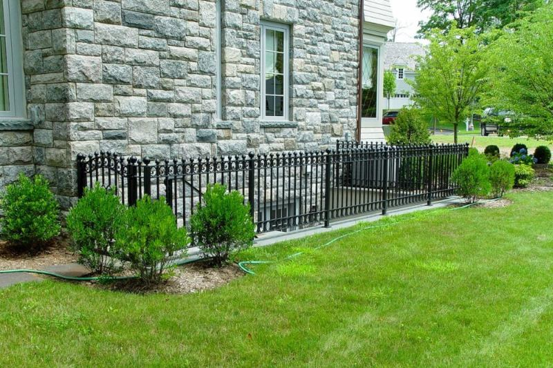
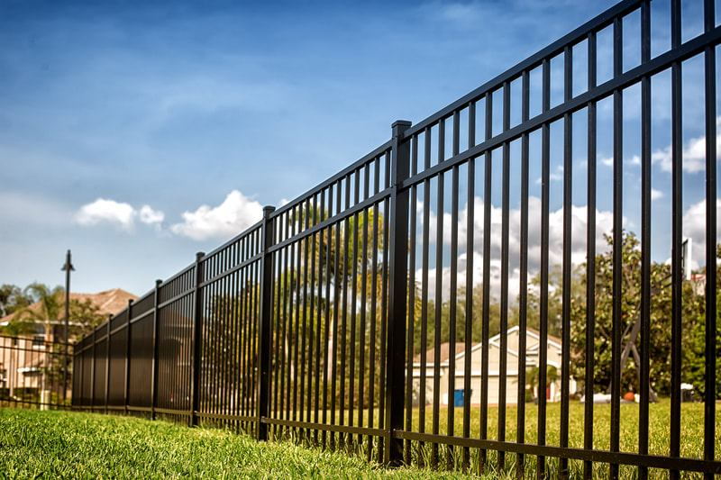

Steel versus a lighter metal
Heavier sections and thicker posts cost more than an aluminum layout of the same length.
Metal fences
Metal, on this page, means steel and ornamental iron. It is heavier than aluminum and it is a different quote. Use it where the gate or the line has to take more weight, and where a coated finish can live in a dry climate.


Short ornamental runs at a front walk, a heavier entry, and gates that aluminum would flex under are the usual reasons to step up to steel. A dry climate helps a coated fence, but a scratch that reaches bare steel still rusts. The finish has to stay intact.
If you want an open fence and the lightest maintenance, aluminum fencing is often the better fit. If you want a solid screen, metal pickets are the wrong tool. That job is wood or vinyl.
We name the material on the estimate so the quote is not a mixed product.
Posts are set for the weight of the section and the gate leaf.
Ornamental sections are stepped so the bottom does not wave off the ground.
Hinges and latches are mounted after the posts have set, then the gate is checked for drag.
We do not publish a price list. These are the details that move an estimate.
Heavier sections and thicker posts cost more than an aluminum layout of the same length.
Plain bars cost less than decorative iron with finials and rings.
The gate is often the expensive piece, because the leaf and the posts have to carry it in the wind.
A new coated run is a different job from stripping and repainting a rusted iron line.
More than a basic chain-link yard, and often more than aluminum of the same length, because the material and the posts are heavier. Decorative details and gates move the number the most. We price the specified metal, not a generic “metal fence” package.
It can, wherever the coating is cut, drilled, or worn through. Albuquerque is dry, which is easier on steel than a wet climate, but irrigation overspray and a buried rail still sit on the metal. We keep steel out of constant ground contact and call out touch-up where a cut is made.
Yes. Ornamental iron is the short decorative fence. Heavier steel is what we look at for a gate or a line that aluminum would be too light for. They are listed separately on the estimate.
Only when the weight calls for it. A view fence or a simple yard line is usually aluminum. A wide gate, a heavier entry, or an existing iron line you are matching is when steel earns its cost. We will say which one the opening actually needs.
Sometimes. A bent picket or a loose hinge can be repaired. Widespread rust, a post that has snapped, or a section that has racked out of square is often a replacement. We look at the metal before we recommend either one.